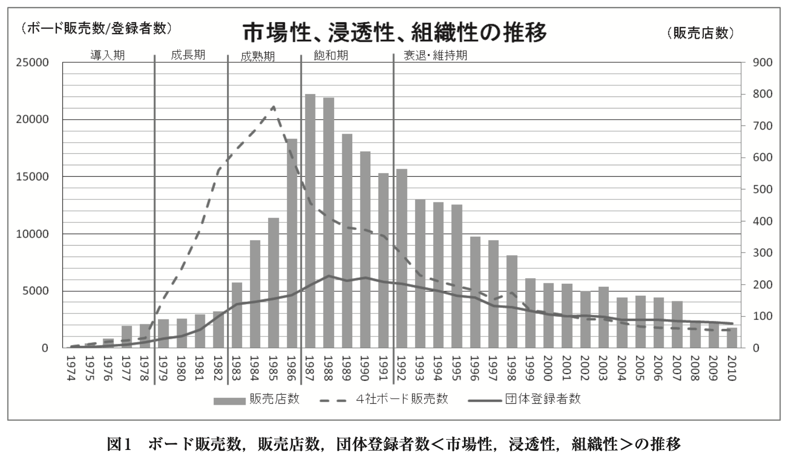

2. 先行研究の検討
2.1 イノベーション普及理論と普及過程の区分について
ウインドサーフィンは新たな発想によって生み出されたレジャー・スポーツであり、イノベーションの賜物と言えよう。ロジャース(2007)のイノベーション普及理論では「普及とはイノベーションが、コミュニケーション・チャネルを通じて、時間の経過の中で、社会システムの成員の間に、コミュニケート(伝達)される過程である(p.8)」と述べられており、普及の要素としてイノベーション、コミュニケーション・チャネル、時間の経過、社会システムを挙げている。ロジャースの提唱するイノベーションの普及理論の基本的な体系は1960年前後に提示されたものであるが、青池(2003)、三藤(2005、2007)はこの普及理論を用いて、ビデオレコーダーやファクシミリなどの普及過程の解明に用いており、1980年代の事象にも対応している。
レジャー・スポーツ分野では、山下・出村(1987)はスイミングクラブに子供を通わせるというスポーツ行動をイノベーションと捉え、ロジャースのイノベーションの普及理論を援用し、イノベーションの普及に影響を及ぼしている要因を明らかにしている。またPoulos&Donaldson(2015)は、オーストラリアでのスポーツ実施時の安全ガイドラインの普及に、ロジャースのイノベーション普及理論に基づいたアプローチを援用したことを説明している。一方でBallet。al(2014)は遠隔的な健康教育の採用と普及にロジャースのイノベーション普及理論を踏まえて取り組んだことを報告している。Kellison&Hong(2015)は環境に配慮したスタジアムの建設に対する取り組みにおいて、環境に影響を及ぼす要因についてロジャースのイノベーションの普及理論の枠組を用いて説明している。そのため、スポーツ・レジャーの普及にロジャース(2007)のイノベーションの普及理論を援用可能と判断した。
<なお>、ロジャース(2007)は普及曲線を用いて、普及過程を5段階に区分している。イノベーションを採用する速度によって革新的採用者、早期採用者、早期多数派、後期多数派、採用遅滞者の5つに採用者を分類し、採用者カテゴリーとした。普及段階における採用者の特徴を明らかにすることは、普及過程を把握する際に有効ではあるが(宇野、1990)、過去のレジャー・スポーツ参加者の特徴を現時点からさかのぼって調査することは不可能である。そこで本研究では採用されたモノや行為(プロダクト)の動向によって普及過程を区分するプロダクトライフサイクル理論を援用する。ライフサイクルのステージは研究者によって3段階、4段階、5段階など区分の基準が異なる(八代・浪越、1989)。ライフサイクル理論をレクリエーション・プログラム経営の分析に応用したHoward&Crompton(1980)、ウインドサーフィンのように用具の価格が高く、耐久財のライフサイクルを対象としたバーグ(1969)等の研究では5段階の分類法が用いられている。
<原田 1987="">はライフサイクルの判定には、あらゆる理論と経験を加味して総合的に判断することの重要性を示唆しており、本研究では数学的成長曲線にあてはめて変動パターンを探る方法ではなく、ボードの販売数の推移を中心に複数の指標によって普及過程のステージを判断する方法(八代、1989;米谷、1995)を用いるのが適切であると考える。
2.2 普及過程の指標について
ロジャースは、普及過程の指標としてイノベーションの採用者数、用具の販売数、新技術の導入数、売上高などを用いている(宇野、1990)。ただし、小野(2000)や樋口(2012)はロジャースが普及曲線を構成する指標を明確にしておらず、統一性がないことを指摘している。だが、Gatignon&Robertson(1985)は、Rogers(1962)の普及理論に基づき普及過程をRate、Pattern:TimeandSpatial、Potentialの3つの指標を用いてマーケティングの観点から説明しており、複数の指標を用いることで普及過程を分析できることを示唆している。ロジャース(2007)は普及過程分析について人間の行動を洞察し、理解することを目的に実施されると述べており、普及過程の指標について普及曲線による指標のパターンを観察するだけでなく、イノベーション採用者の動向やコミュニケーション・チャネルとのかかわり、制度の変更など外部的な影響を考慮すべきであることを示唆している。これら3指標に加え、草深(1986)はスポーツ産業の浸透にマスコミ、コマーシャル、メディアイベントのプロデュースが有効であることを主張している。さらにベスト(2009)、中島(1988)はメディアが普及に重要な役割を果たすことを述べていることからも、現代的な普及過程の解明にはメディアへの露出性を指標に加える必要がある。
2.3 レジャー・スポーツにおける普及戦略
ちなみに戦略という用語は、経済戦略、経営戦略、人事戦略のように一般的に使用されているが、普及現象に対する戦略を論じた研究は多くない。レジャーおよびスポーツに関する普及戦略の研究には、嘉納治五郎の柔道における普及戦略(桐生、2012)、ACL損傷予防プログラムの普及戦略(窪田・鎌田、2016)、幼児期の運動指標の普及戦略(春日、2014)などがあるが、明確な定義はなされていない。
マリンレジャー・スポーツの普及過程及び普及戦略に関する研究においても同様で、明確な定義はなされておらず、普及を促進するために行われた方略が述べられている。ヨットは外国人居留地から高原避暑地に伝播し、海浜別荘地を中心に普及したが、佐藤(2003)は日本経済が発展し、経済的に豊かになった我が国の社会的背景と、受容基盤となった欧米人や上流階級者によって行われたヨットクラブの運営や競技会の開催が、普及を促進したことを明らかにした。また小長谷(2005)はサーフィンの普及過程を、湘南地区から全国に伝播していく受容過程を実施者の活動内容によって3期に分けて説明した。第1期(輪郭形成期)には用具の供給と活動場所の整備、第2期(大衆化期)にはファッションの流行や雑誌等によるマスコミの影響が普及を促進したことを明らかにした。第3期は、ダイヤルQ2による波情報やインターネット販売など大衆化後の活動についてであった。スクーバ・ダイビングは1960年代後半からチャンピオン・スポーツとしてのスピア・フィッシングからレジャー・スポーツとしてのファン・ダイビングへとダイビングスタイルが移行することで、参加者が増加した。参加者の増加を促進した要因として圓田(2009)は海外の潜水指導団体の商業主義的な活動とデジタルカメラの普及を挙げている。
本論文のテーマであるウインドサーフィンの普及及び普及戦略に関する研究において、平野(2001)はウインドサーフィンの特許を巡る論争とオリンピック種目への採用に向けた取り組みを調査し、特許が我が国への普及を促進し、一方で阻害したことを明らかにした。また平野(2004)は日本ウインドサーフィン協会(以下:JWAと表記)の活動について文献調査を行い、競技団体の組織的な活動が我が国における黎明期のウインドサーフィンの普及を促進したことを明らかにしており、普及を促進した方略と考える事ができる。ただどちらの研究も普及初期の事象や期間に限定された調査研究であり、普及過程や普及戦略に関する縦断的な知見は確認できなかった。
海外では、Krebs(1986)、Bellis(2016)は特許を巡る国際的な論争と米国における特許の範囲について報告をしており、ウインドサーフィンの特許が普及に与えた影響について言及している。またSedlaczek(2009)は歴史文化的な観点から、ウインドサーフィンに用いられる用語の特徴を調査している。製品開発や競技団体の違いによってウインドサーフィンの用具には異なる名称が与えられ、名称が多様化したことを明らかにしているが、用具販売の促進などにどのように影響があったかについては述べられていないShah(2006)はウインドサーフィンには22年間で40回の製品イノベーションが起きており、イノベーションの連続が産業を大きく成長させた要因であったことを明らかにした。つまり製品イノベーションが普及を促進した戦略であったと考える事ができる。しかしウインドサーフィンへの参加者数や用具販売数、競技団体の動向などに関する縦断的な記載は見られず、米国を含め我が国のウインドサーフィンの普及戦略に関する研究知見は皆無であった。
3. 目的
以上の先行研究の検討より、本研究は、ロジャースのイノベーション普及理論を援用し、国内にウインドサーフィンが普及する過程及び普及各期における普及戦略について明らかにすることを目的とする。
4. 調査の方法
ウインドサーフィンには「ボードセーリング」、「セイルボード」、「ヨットサーフィン」など複数の呼称があるが、本研究では現在、国際競技団体が使用しているウインドサーフィンを用いる。国内で用具販売が開始された1974年を調査の起点に、2010年までの37年間を調査対象期間として、ウインドサーフィン及びマリンレジャー・スポーツに関する文献調査を行った。最大で17団体に分かれていた競技団体が2010年に統合されたことは、多様化していた用具や活動内容が集約された証左であり、普及過程の分岐点と考え、本調査の終点とした。
普及過程の指標としてGatignon&Robertson(1985)が用いた3つの指標および露出性を用いるが、Rateはイノベーションの採用規模のことであり、「市場性」とした。「市場性」にはボードの販売数を用い、国内で20年以上継続して輸入販売を行っているメーカー4社の販売記録と日本ボードセーリング協会(以後JBSAと表記)保存資料を収集し、ボードの販売数を集計した。Pattern:TimeandSpatialはイノベーションが浸透していく時間と場所のパターンのことであり、「浸透性」とした。「浸透性」には販売店数の動向を用い、各年の月刊ハイウインド(以下HWと表記)4月号に掲載された販売店リストを用いた。Potentialはイノベーションの発展性及び可能性のことであり、ウインドサーフィンのスポーツとしての発展性・可能性を「組織性」とした。「組織性」には競技団体に保管されていた登録記録を用い、競技団体登録者数とした。
「露出性」には雑誌約17万冊を所蔵し、「雑誌の図書館」と呼ばれる大宅壮一文庫に所蔵された雑誌と新聞全国4紙への掲載数を指標とした。雑誌への掲載数の検索にはデータベース「WebOYA-bunko」(検索日2015年5月6日から5月31日)を、新聞への掲載数の検索にはデータベース「G-Searchセレクト」(検索日2015年6月17日から8月16日)を使用し、「ウインドサーフィン」及び「ボードセーリング」を検索語に設定して抽出を行った。抽出された記事を読み、内容がウインドサーフィンに関する活動内容や競技結果などに触れていない記事を除き、集計し、掲載数とした。
5. 結果
5.1 普及過程の区分
図1には販売店数、ボード販売数及び団体登録者数の推移、図2には雑誌及び新聞掲載数を示した。新聞への掲載数を除く、その他の指標は1980年代後半をピークとするベル型の曲線を描いた後、2000年前後から指標の増減が少なくなった。4つの指標の上昇が緩慢な1974年から1978年を導入期、用具販売数、団体登録者数、雑誌掲載数が急速に伸びた1979年から1982年を成長期とした。販売店数、競技会開催数、団体登録者数が増加し、ボードが最も販売された1983年から1986年を成熟期とし、団体登録者数、雑誌・新聞への掲載数は増加するが、ボード販売数、販売店数が減少した1987年から1991年を飽和期とした。新聞への掲載数を除くすべての指標が減少し、後半は指標の変動が少なくなった1992年から2010年を衰退・維持期と区分した。
<5 class="2">ウインドサーフィンの普及過程と普及戦略
ウインドサーフィンの普及過程及び普及戦略を表1に示した。普及戦略については各普及期における用品・用具のイノベーション、販売店・用具メーカーの販売、競技団体・イベントの組織化、メディアの広報宣伝に分類した。
5.2.1 導入期(1974年から1978年)
1)市場性(ボード販売数)
ウインドサーフィンが国内で販売されたのは1974年であり、米国から輸入されたウインドサーファー艇(以下WS艇と表記)であった。年間の販売艇数は1974年の150艇から毎年増加し、導入期全体では計2,600艇が販売された。国内におけるWS艇の販売・製造権は勝和機工(株)と(株)ウインドサーフィン・ジャパン(以下WSJ)の専用であり、WS艇はセイルなどのパーツとセットで約17万円であった。用具・用品の価格帯が高価なこともあり、マリンレジャー・スポーツ経験のある社会人の参加者が多かった(JWA、1984.8)。セイルサイズやボード形状の変更、フットストラップの開発などの製品イノベーションに伴って販売数を年々増やし、販売数の上昇は緩やかではあったが、輸入品は即完売の状態が続いた(鈴木、1982)。

2)浸透性(販売店数)
1974年に東京、和歌山、静岡に4店の販売店ができた。WSJやJWAのスタッフが各地でデモンストレーションを行うことで体験者が増加し、販売店が水辺地域に広がった(JWA、1975.10)。1975年には全国6ブロックすべてに販売店が設置された。WSJの販売促進活動に加え、サーフィンやヨット、スクーバ・ダイビングなどのすでに実施されていたマリンレジャー・スポーツ業者の販売網によって、いち早く販売ルートが整備された。1976年10月には70店舗が登録し、1977年にはウインドサーフィン専門店と銘打つ販売店も出現した(JWA、1977.4)。専門店という表記には、他のレジャー・スポーツ用具と同様に販売している販売店と差別化する意図があったと思われる。ウインドサーフィン用のウエットスーツの販売やインストラクター制度の確立と同時期のため、用具を販売し、乗り方を教えることで生計が立てられる時期を迎えた証左とも言える。販売店は参加者を愛好者グループごとに登録するJWAのフリート制度を推奨した。販売店がフリートの活動拠点になることで販売店に参加者がつどい、海で遊ぶ仲間を口コミで増やす場となり、ウインドサーフィンの浸透に効果的であった。
3)組織性(競技団体登録者数)
WSJ代表の鈴木東英(1982)は競技スポーツとしての普及を強く望み、競技団体JWAを1974年1月に設立した。JWAへの登録者数は1974年の70名から毎年増加し、1978年には500名を超えた。JWAは、1974年3月に初の公式競技会、11月に全日本選手権、1977年4月には全日本学生選手権を開催した。ヨットと同様の競技形態が主流であったが、フリースタイル、ロングディスタンス、スラロームなど多様な競技形態が加わった。競技団体と用具メーカーが競技会の運営、支部組織の設立など競技の普及を戦略的に行った時期であり、1978年には33競技会の開催、日本ヨット協会(JYA、現日本セーリング連盟)への加盟や国際的な競技会への参加など、競技スポーツとしての拡大が見られた。また競技団体が推奨したフリート制度はJWAの競技会に出場する窓口、安全対策やルールの啓蒙にも機能しており(平野、2007)、競技団体による競技化、組織化の普及戦略は登録者の増加を促進した。
4)露出性(記事掲載数)
導入期の雑誌への掲載は、徐々に増加するが年間6誌前後と少なく、普及に大きな影響を及ぼしたとは考えられない。記事の見出しには「新興スポーツ」「流行りの」「ヤング向け」などの見出しが付けられ、新規のレジャー・スポーツとして扱われていた。記事の内容はWSJやJWAのスタッフが国内各所でウインドサーフィンのデモンストレーションを行う様子、乗り方や楽しみ方などが詳細に解説され、JWAの活動内容が紹介されており、用具メーカーや競技団体の普及戦略であったと考えられた。また「ニューヨットの競技会」(報知新聞、1974)「風に乗って、水上を滑る」(朝日新聞、1974)、「風まかせ、波はいらないサーフィン」(読売新聞、1975)などと題して掲載されていたことから、サーフィンやヨットの派生形として扱われていたことがわかる。
5.2.2 成長期(1979年から1982年)
1)市場性(ボード販売数)
1979年はWSJがWS艇の国内生産を始め、価格が195,000円と上昇したにもかかわらず、WS艇の国内販売数は前年の4倍以上、1年間で販売開始からの総販売数を超える4,300艇が販売された(JWA、1980.9)。1982年には14,600艇、成長期全体では35,500艇のWS艇が販売された。ボードが軽量化され、可動式センターボードの導入やトラッカーを付属するなど機能的なバリエーションを増し(JWA、1982.10)、急速に販売数を伸ばした。競技者にも、レジャー参加者にも使いやすい機能を追加した製品イノベーションによる普及戦略によって、販売数が増加したと言える。
海外ではWS艇以外のボードを用いた競技会や賞金レースが多数開催されていた。ただ国内では1980年前後からウインドサーフィン用具の特許が示す範囲をめぐり、特許を無効とする販売店や輸入業者とWSJ間に法廷論争が起き(横山、1983;スポーツ産業新報、1983)、特許料の納入や製品差し押さえなどが実施された。国内におけるウインドサーフィンの市場拡大はWSJやJWAの普及活動による影響が大きいが、WS艇以外の艇の販売総数は1,745艇にとどまっており、WSJの保有した特許権の存在がWS艇以外の販売を抑制したと考えられる。
2)浸透性(販売店数)
1981年には奈良・栃木県を除く45都道府県に105の販売店が展開された。店舗数の増加は34と急増ではないが、地理的な拡大が見られた。さらに1981年にはビック、三井物産など大手企業が輸入販売に参入した。またマルイ、西武スポーツ館、スポーツショップタカハシなどの大手スポーツ店も用具販売を開始した。販売店の多くは水辺に隣接していたが、水辺に近くない都市部の販売店も増加しており、用具の入手が手軽になったと考えられる。また従来は用具販売と同時に水上での操作方法やルールを指導する販売方法が主であったが、都市型の店舗では用具の販売のみを行うなど、販売方法に変化が見られた(JWA、1982.4)。成長期には用具の販売数、競技団体への登録者数が増加しており、立地や販売方法の変化、商圏範囲の拡大によって用具の入手を容易にした販売店の普及戦略が浸透に影響したと考えられた。
3)組織性(競技団体登録者数)
成長期を通じて、JWAへの登録者は800名から2,800名と約3倍に増加し、フリート数は201へと倍増した(JWA、1982.4)。1981年にはウインドサーフィンが1984年のロサンゼルスオリンピックのヨット競技種目に採用がきまり、JWAは日本ヨット協会(JYA)に加盟した。またジャパンクラシックなど賞金レースが行われるようになり、1981年後半には企業と契約し、プロセイラーとして活動する者も出現した。さらに1982年アジア大会で石渡常原氏が金メダルを獲得し、競技スポーツとしての活動が注目を集めた。登録者が増加したという意味では組織性が促進されているが、成長期のボードの販売数37,280艇であったのに対し、団体登録者数の増加は2,000名と少数であり、組織化を進め、登録者を増やす競技団体の普及戦略が円滑に機能していたとは考えられない。平野(2001)は競技団体の整備や選手強化が進まなかった原因として、オリンピックに使用される艇種や特許に関する問題から競技団体が複数存在し、参加者が混乱したこと、オリンピックへの選手派遣などを巡ってJYAとJWAの対立が深まったことを指摘している。前述のWS艇の販売数に対し、WS艇以外の艇の販売数が少数であったことからも、競技に用いられる艇種や競技団体の活動に偏りがあったと推測され、組織化を抑制したと考える。
4)露出性(記事掲載数)
1979年の雑誌への掲載数は16誌、成長期には合計54誌に掲載され、露出性が増加した。また「明星」「中学3年生」「平凡パンチ」などレジャー・スポーツとは関連の少ない若者向けの娯楽誌にも多数掲載されており、その新奇性や楽しさが紹介されていた。一方でロサンゼルスオリンピックに使用する艇種の選定や特許に関連した問題が新聞紙面に取り上げられた(朝日新聞、1981;日経産業新聞、1983)。
1980年後半に月刊誌Hi-Wind(以後HWと表記)と専門書ウインドサーフィンが創刊された。特にHWにはセイリングの適地、テクニック、競技会、ファッション、海外での情報や波に乗るウエイブパフォーマンスなどの活動の様子が全国に紹介された(HW、1989.11)。インターネットなど無い時代であり、参加者の活動見本になったと思われる。
1982年頃より清涼飲料水や衣類のTVコマーシャルにウインドサーフィンの疾走する様子や大きな波に挑戦する映像が用いられた。ウインドサーフィンの爽快感が強調された映像は宣伝対象であった製品のイメージとして販売促進に活用されると同時に、ウインドサーフィンのメディア露出を高め、ウインドサーフィン自体に爽快なイメージを確立することにつながったと考えられた。水辺でないと目にする事が出来なかったウインドサーフィンの帆走がメディアに露出することで大衆の目に触れ、ウインドサーフィンに対する興味や活動が促進されたと考えられる。
5.2.3 成熟期(1983年から1986年)
1)市場性(ボード販売数)
WS艇の販売数は1983年の13,500艇から1986年4,000艇へと減少した。反面、WS艇以外の3社のボード販売数は1983年3,900艇から1985年13,100艇、1986年12,800艇へと急速に増加した。1983年5月にウインドサーフィンの特許を巡る裁判で特許庁が特許無効の審判を下した。その後も公判は継続されたが、特許料の納入や開発の規制が緩和されるという推測から輸入製造業者が多数参入し、国内で販売される艇種が急増した。
成熟期には競技用、レジャー用、波に乗るウエイブ用などのボード、風の強弱に合わせた複数のセイルが販売されており、製品イノベーションによる参加者の用途目的や技量に応じた用具の専門化、細分化が進んだ。また1セットの用具で様々なコンディションに対応できるオールラウンドボードや帆走自体を楽しむことが目的とするファンボードというカテゴリーの用具販売が行われるなど、用具メーカーによるイノベーションは用具の多様化、多目的化をもたらした。
また、これまではセイルとボードなどの用具をセットで販売する形態が主流であったが、成熟期には用具の多様化に伴って各パーツを参加者が選択して購入する販売形態に移行するという販売方法の変化が見られた(平野、2000)。さらにWS艇はセットで20万円前後であったが、他のメーカーの用具はボード30万円前後、セイル4~8万円前後、その他にマスト、ブーム、ユニバーサルジョイントなどのパーツを揃えると、総額40~50万円前後の費用が必要であり、価格の上昇につながった。
国内における用具販売の最盛期を迎え、WS艇を第一世代とするならば、第二世代とも言える用具へと変化し、それに伴って販売形態、価格にも変化が見られた。特許無効の審判による影響はもちろんであるが、用具メーカーが行った製品イノベーションと参加者の様々な志向やニーズに対応した用具の専門化、細分化、多様化、多目的化などの販売戦略が用具の購買を促進した普及戦略であったと言える。
2)浸透性(販売店数)
販売店数は1983年206店、1985年411店、1986年660店と急速な増加を示した。さらに内陸地の販売店が増加し、ヤマハやブリヂストンなどの国内大手企業が用具の生産を開始し、国内外への販売を始めた。活動シーズンの参加者数を示すデータは存在しないが、用具の販売数および全国的な店舗数の増加状況から販売店には年間を通じて収入があり、相当数の参加者が時期や場所を限定せずウインドサーフィンを実施していたと推測された。
海水浴場やリゾート地で実施される事が多かったウインドサーフィンは、容易に用具を入手できる商圏エリアの確立、レジャー志向の参加者にも手軽に扱える用具開発、身近な水辺でも実施できる用具や環境の整備といった販売店・用具メーカーの販売戦略によって、日常的に実施できるレジャー・スポーツへと移行していったことが浸透性を高め、普及の拡大につながったと考えられる。
一方で水辺地域に隣接しない都市型の販売店が増加したこともあり、ハワイや沖縄、伊豆七島、奄美大島などの好適地でセーリングすることを目的とする旅行ツアーが販売店によって数多く企画された(Windflash、1983.12;HW、1983.7)。水辺地域に隣接するリゾート施設にはウインドサーフィンのレンタル用具やスクールが設けられており(Windflash、1983.12;HW、1984.4)、リゾート型レジャー・スポーツとして拡大を続けた。
3)組織性(競技団体登録者数)
競技団体への登録者数は1983年3,820名から1986年には4,618名と年々増加した。プロ選手の活動が活発化し、1984年にプロフェッショナルウインドサーフィン選手会、1985年には全日本実業団ボードセーリング連盟が発足した。さらにJYA内に使用する用具の異なる艇種ごとに競技団体が設置されたことも登録者の増加に寄与したと考えられ、競技形態や艇種によるセグメンテーションは組織性を推進したと言える。また1983年頃からスポンサー企業の社名や製品名などを大会名に持つ「冠レース」と呼ばれる競技会が増加し、コカ・コーラや日本たばこなどの企業がプロ選手の国際大会を誘致しており、競技会の開催数は1983年228大会から1986年460大会へと倍増した。
成熟期の競技会は使用する艇種を限定せず、予選や出場制限を設けない「草レース」と呼ばれる開催形態が主であった。競技団体が開催する全日本選手権や海外派遣レースの選考会のような艇種ごとに開催される公式な競技会とは異なり、「草レース」は用具メーカーや販売店が開催し、出場制限が無く、誰でも参加できた。競技に参加するハードルが下がり、レジャー志向者が爽快感や挑戦を求め、参加者の技量を試す活躍の場となった(HW、1985.3)。「草レース」は、大衆化を促進する組織化イノベーションとも言え、製品販売を促進したいスポンサー企業の意図と合致し、競技者の増加に効果的な普及戦略であったと言える。
4)露出性(記事掲載数)
雑誌への掲載数は1984年が21誌と増減はあるものの、導入期、成長期と比較して多く見られ、新聞への掲載数も年々増加し、1986年には18本となった。用具メーカーのメディア戦略かどうかは定かでないが、1983年と1985年にはアイドル歌手が出演する映画のストーリーに用いられ、主人公がウインドサーフィンで帆走し、競技会に出場した。1984年には年間で20誌以上の雑誌に記事が掲載されるなど、テレビや雑誌などのメディアに露出しており、参加者の増加に貢献したと考えられる。またウインドサーフィンスクール(教室)が盛況で、販売店の大きな収入源となっていたが(JBSA、1985.12)、スクール用のセイルにタバコや清涼飲料水などのロゴマークや商品名を記載したものが多く見られた。海水浴などで水辺を訪れた人たちの目にとまる意図から宣伝材料としてウインドサーフィンが用いられ、これらの商品の販促活動によっても華やかなセイルがメディアに多数露出し、知名度と露出性の向上につながったと推測された。
なお、この頃より、ウインドサーフィン参加者による事故が多発し、漂流事故や死亡事故などが新聞に掲載された(朝日新聞、1984;朝日新聞、1985)。競技団体は指導者制度の浸透や参加者のナンバー登録など対策を講じたが、水辺から離れた量販店による販売では初期技能やルール、海岸の利用方法など充分な指導をすることができず、事故が多発した一因となった(HW、1982.12;WindsurfCLUB、1991.3)。小長谷(2005)はサーフィンの普及過程において、成熟期にあたる大衆化前期にサーファーの事故、悪評などがメディアに取り上げられ、サーファーのイメージが変わるきっかけになったことを指摘している。危険を伴うといったイメージがウインドサーフィンの普及を抑制したかは不明だが、参加者が急増したことの弊害であり、成熟期の特徴の一つと言える。
5.2.4 飽和期(1987年から1991年)
1)市場性(ボード販売数)
1988年には年間に国内で約20,000艇のボードが販売されており、WSJを除く3社の国内販売シェアは52%であった(JYA、1988)。用具メーカーのイノベーションによりボード形状、芯材、外皮など素材が変わり、軽量化され、用具の強度が増した結果、ボードのスピードや操作性などが向上した(平野、2000)。また、セイルや他のパーツに関しても同様で、用具メーカーが開発を競うことで用具が改良され、海のコンディションに合わせた用具が開発されて多様化し、技量や用途によって細分化・専門化するなどイノベーションが進められた。我が国は1991年にバブル経済が崩壊し、景気の後退期を迎えた影響もあり、ボードの販売艇数は減少を続けた。しかし、競技団体への登録者数は急激な減少を示しておらず、競技者の活動は活発であったと推測される。ただイノベーションの大半は競技性の促進(競技化)や技能の向上(高度化)に寄与するものであり、ワンタッチ式ブーム(簡易化)やカーボン製マスト(軽量化)など、初心者に恩恵をもたらした製品イノベーションはわずかであった。成長期にはマーケットの主流であり、大衆化を促進したWS艇の販売数が減少したことに加え、初心者層の実施を促すような用具・用品のイノベーションが少なく、新たな参加者の獲得につながらなかったのではないかと考えられる。
2)浸透性(販売店数)
販売店数は1987年が800店とピークを迎えた後、緩やかに減少した。国内では40を超える多数のボードブランドが販売を行っていたが(HW、1987.4)、ボードの販売数に顕著な増加は見られず、用具が参加者に行きわたり、販売店や用具メーカーが飽和状態にあったと考えられる。
1987年には、総合保養地域整備法(リゾート法)が制定され、増加したリゾート施設ではヨットや船舶などと比較して、設備投資が少ないウインドサーフィンを積極的に取り入れていた(HW、1991.3;HW、1992.10)。販売店はこうしたリゾート施設や旅行業と連携して国内外でのセーリングや競技会に参加するためのツアーを企画し、レースを開催するなど、販売した用具の利用機会と用途拡大を行った。また1990年以降、HWでは一部の販売店を別枠に記載し「ウインドサーフィン専門店」と表記している。こうした販売店による独自の企画や表記など差別化は販売店の販売戦略であり、ウインドサーフィンの用具や楽しみ方が国内に浸透し、飽和した販売店や用具メーカーの淘汰が始まったと言える。
3)組織性(競技団体登録者数)
飽和期における競技団体への登録者数は期間を通じて5,500名を超える登録者がおり、1988年が6,321名と調査期間内で最も登録者が多かった。また競技団体も増加しており、最多で17団体の活動が確認できた。参加者が競技活動を行うためには複数の競技団体に所属する必要があったなど乱立状態にあった。日本ヨット協会が、日本ボードセーリング連盟を設立して競技団体の統合を試みるが、合意に至らなかった。1988年にフリート数405、競技団体登録者6,321名、1989年に競技会の開催数は540と最多であり、飽和期が競技活動の最も盛んに行われた時期であった。飽和期の競技は、コースレースと呼ばれるロングボードを用いた競技であり、冠スポンサーが付き、賞金や賞品が配布される「草レース」が主であった。競技会は、ゲーム大会や音楽ライブ、パーティーなどと組み合わせたイベントが多数開催されており(HW、1991.11;HW、1991.12)、競技だけでなく、多様な娯楽要素を持つレジャー・イベントへと開催形態が大型化した。選手やイベントのスポンサーとしてレジャー・スポーツ関連の企業だけでなく、ファッションや旅行業など多業種が参入し(HW、1991.4;HW、1992.4)、市場や販売網の拡大につながった。
一方、競技会への参加者は競技以外のイベントを目的とした参加が増加したと記載されており(JBSA、1991)、勝利や競技性を求めるだけではなく、多様な志向を持っていたことが報告されている。イベントの大型化は多様な目的を持った参加者の興味と関心を引き付け、これまで競技に参加していなかったセグメントの参入を促すことで競技団体への登録が活発化しており、組織化を促す重要な普及戦略であったと分析する。ウインドサーフィンのイベントは競技的な特徴とレジャー的な特徴を併せ持つことで、参加者を増やし、組織を拡大した。ただ登録窓口の一本化や競技形態の統一など競技団体による組織化が促進されていない。競技会の開催数、競技団体の登録者数が最も多かった飽和期の参加者や競技会の多様化は組織化を妨げ、結果的に競技参加者や競技団体への登録者の増加を維持できなかった要因の一つであったとも推測される。
4)露出性(記事掲載数)
雑誌への掲載数は24誌と1991年が調査期間内で最多であった。また新聞紙面への掲載数は1990年123本、1991年102本と増加しており、露出性が高まった。記事の内容は、競技者の活動内容や競技内容が主であり、ウインドサーフィンというレジャー・スポーツが大衆に浸透していることを想定して書かれた記事であった。プロ選手が出場する世界大会(ワールドカップ)が1984年より引き続き国内で開催されていたが、大会告知などで競技場面がメディアに露出し、参加者の競技への関心を高めることにつながったと思われる。
また従来のセイルは布に近い素材であったが、1990年前後より透明なフィルムが素材として用いられるようになった。機能的な向上を意図した製品イノベーションであったが、スポンサーや大会のステッカー、チーム名などをセイルに広告として貼ることが可能となった。そのため、セーリング風景を視覚的な広告として用いることが容易となり、TVコマーシャルや雑誌などのメディアに宣伝材料や広告塔として露出する機会が増加した。宣伝材料としてメディアに露出することはモータースポーツなどでは一般的であり(近田、2006;小林、2010)、ウインドサーフィンの商業化やプロスポーツ化を促進したと言えよう。本来のセーリング活動や競技風景がメディアに取り上げられるニュース性とは異なるが、メディアとの親和性が強いというウインドサーフィンの特性は、普及を促進したと考えられる。
5.2.5 衰退・維持期(1992年から2010年)
1)市場性(ボード販売数)
ボードの販売数は1992年の8,250艇から徐々に減少した。2005年以降は大幅な増減が見られなくなり、1,700艇前後で推移した。一過性のブームが去り、市場規模は縮小したが、継続的に用具の販売が行われており、一部の愛好者に定着したと考えられる。
販売数が減少した後も用具・用品開発のイノベーションは続き、用具の専門化が促進されており、ウエイブパフォーマンス用やレース用、フラットウオーター用など、用途によって細分化され、用具選択の幅が広がった(平野、2000)。製品イノベーションは帆走スピードや操作性の向上につながり、経験者や上級者に恩恵をもたらした。また初級者や新規参加者が容易に帆走できるエントリーモデルの開発及び販売による普及戦略が行われているが、市場を拡大するには至らなかった。用具を中心とする高度化、専門分化が進んだ反面、複雑化し、細分化された用具は新たな初心者の参入の障害となり、イノベーションが推進することによる逆効果現象が起こったと言える。
2)浸透性(販売店数)
HWの記載では販売店が2007年148店から2008年には84店へと急激に減少した。ただこれはHWへの掲載方法が変更された影響であり、用具の販売状況から実際に販売店が半減するほどの変動があったとは考えられない。所在地から販売店は全国的に展開しており、地理的な普及は維持されていた。用具の専門化、多様化に伴って販売メーカーは試乗会などを開催し、用具の説明や販売促進を行ったが、効果的な普及戦略とはならなかった。
3)組織性(競技団体登録者数)
競技団体への登録者数は減少が続いたものの、2000年以降は2,000名前後の登録者数で推移した。1994年に国民体育大会にヨット競技の種目として採用されたことや1996年に分化していた競技団体の一部が日本ウインドサーフィン連盟(WFJ)に統合されたことは、競技会開催や参加を円滑に行う組織性を高め、競技者が活動を継続する要因になったと考えられる。1984年から国内で開催されていたプロ選手による国際大会への来場者数は1992年が約21万9千人、賞金総額約24万ドルと最多であった。ウインドサーフィンに関連した企業だけでなく、たばこ、アウトドア、ファッション、トラベル企業がスポンサーとなり、年々競技会の規模を拡大し、プロ登録者も1993年が158名と最多であった。ワールドカップは1994年以降、メインスポンサーの撤退によって国内で開催されなくなるが、こうした競技志向の強まりはレジャー的な活動を求めて競技団体に登録していた者や新規の参加者を減少させたと考えられた。組織化が進むにともない、新規参加者の拡大や活動の継続を促す競技団体の組織的な活動が必要であったと思われた。
4)露出性(記事掲載数)
1994年以降、大宅壮一文庫所蔵の雑誌への掲載数は年間で10件に満たない。一方、新聞への掲載数は1990年代後半から2000年代前半に増加しており、1996年から2002年は年間160本以上である。新奇性やニュース性が薄れたことやワールドカップの開催がなくなったことによって大衆雑誌が取り上げなくなったのではないかと推測される。また新聞記事の内容は国民体育大会種目への採用、オリンピックや国体、草レースの競技結果や選手のコメントが主であった。競技団体及び競技主催者のメディア戦略とも考えられるが、競技的な活動がメディアへの露出を持続させたと言える。
6. 考察
6.1 普及指標の妥当性
本研究では、市場性、浸透性、組織性に加え、メディアへの露出性を普及指標とした。露出性については、ロジャース(2007:pp.24-27)も普及の4要素の1つにコミュニケーション・チャネルを挙げており、ウインドサーフィンの普及過程において、導入期では対人チャネルが、成長期以後はマスメディア・チャネルが効果的な普及戦略となっていた。この研究結果は、サーフィンの普及過程の研究結果(小長谷、2005)を支持している。ただし、成熟期以降においては、マスメディアの露出性は小さくなることとマーケットが一部の愛好者に収斂していく傾向があることから、多様なメディアを駆使することが求められよう。なおロジャース(2007)は普及過程におけるインターネットを活用したコミュニケーション・ネットワークの広がりと可能性について言及しており、愛好者というセグメントに対してはマスメディアよりもSNSを用いたパーソナルメディアによる露出性が普及指標になる可能性が高いと考えられる。
Gatignon&Robertson(1985:p.858)は「社会システム内の成員の同質性が高いほど、イノベーションが市場に普及する速度が速く、浸透性が高い」と述べており、組織性が促進されるほど、市場性や浸透性の指標が高まることを示唆している。ウインドサーフィンの普及過程では、導入期から成長期において類似した研究結果が認められたが、飽和期にては市場性が減少しており、普及過程の時期によって指標の説明力が弱くなると考えられる。また、飽和期・衰退期においては、市場性が減少しても浸透性は減少していないことから、これら4指標の関係は単純な比例関係ではないことが明らかになった。
6.2 普及過程と普及戦略
普及過程の各区分において普及戦略を整理すると、導入期には競技者の拡大につながる組織性が普及戦略となっていた。成長期には、用品・用具の販売ルートが確立された市場性と、雑誌や月刊誌のメディアにおける露出性が有効な普及戦略となっていた。成熟期にはシーズン型スポーツから通年型レジャー・スポーツへと移行をしたことから市場性と、スポーツ・レジャー関連企業だけでなく、多数の企業が輸入販売に参入し、用具の種類や用途が多様化したことから浸透性が有効な普及戦略であった。しかしながら、ブームが一段落した後の飽和期には、組織性の指標である競技団体への登録者数がピークを迎えるが、マスマーケットを対象とした統括団体の組織化による普及戦略は有効ではなかった。同時にメディアを当てにした他力本願的な露出性も有効には機能しなかった。衰退・維持期は、ウインドサーフィンの市場規模が横ばいになったため、市場性の普及指標よりも用具・用品の高度化、専門化がさらに進み、一部の愛好者にレジャー・スポーツとして定着しつつあることが窺える。
スクーバ・ダイビングの普及過程(圓田、2009)では、普及初期に指導団体による普及の促進、いわゆる組織化が行われている。またヨットの普及過程(佐藤、2003)においても、導入期には組織性の普及戦略が有効であった。またサーフィンの普及過程(小長谷、2005)は普及の初期にあたる第1期には市場性が、成長期・成熟期に相当する第2期にはマスコミによる露出戦略が有効であった。これらの知見は本研究におけるウインドサーフィンの普及過程及び普及戦略と類似しており、マリンレジャー・スポーツ普及過程の特徴と言える。なお成熟期に見られたシーズン型スポーツから通年型レジャー・スポーツへと移行したこと、飽和期に競技団体への登録者数が最多となったことは、他種目の普及過程では確認できず、ウインドサーフィンの特殊性であると考えられる。一方で、我が国のウインドサーフィンの普及過程では、成長期及び成熟期に市場性の普及戦略が有効であった。諸外国におけるウインドサーフィン普及過程(Krebs、1986;Shah、2006;Bellis、2016)においても製品イノベーションによる用具開発が効果的な普及戦略であり、特許が普及過程に影響を及ぼしていたことでは、我が国と同様であった。ただし、海外におけるウインドサーフィンの普及過程に関する文献が限られており、我が国との類似性や特殊性を検討するには至らなかった。
7. 結論
本稿では、ウインドサーフィンの普及過程についてイノベーション普及理論に依拠し、市場性、浸透性、組織性、露出性の4指標を用いて分析を進めた。マリンレジャー・スポーツの普及過程では、導入期には組織性、成長期には市場性と露出性、成熟期には製品イノベーションによる市場性と浸透性に関する普及戦略が有効であった。ウインドサーフィンにおける普及過程の特殊性として成熟期の通年型レジャー・スポーツへの移行及び飽和期の競技団体登録者数の増加が確認された。また普及の継続には成熟期以降において多様なメディアを駆使する必要があることが推察された。
普及過程を5期に分割することで、普及過程と普及戦略の関係性を検討することが可能となった。さらに4指標の関係性が単純な比例関係ではないことが明らかとなり、レジャー・スポーツの普及過程を分析する上でこれら4指標は有効と言える。
8. 本研究の意義と今後の課題
ウインドサーフィンの普及は、これまで限られた期間や事象についてのみ論じられてきたが、本研究はウインドサーフィンの普及現象を長いタイムスパンで捉えており、普及過程の全体像を明らかにすることができた。レジャー・スポーツが国内に普及し、ブームを迎え、定着した一例を把握できたことで、今後我が国に新しいレジャー・スポーツが導入され、普及を促進する際の普及過程に応じた普及戦略を検討する材料が得られたことなどが意義として挙げられる。
なお、本研究は1つのレジャー・スポーツが普及していく事象を詳しく観察することで新しいレジャー・スポーツが国内に普及する過程を観察する課題を設定した。そのため、レジャー・スポーツの事象をウインドサーフィンだけに限定した。また普及過程において、特に活動が拡大した過程が主であり、飽和し、衰退した原因については詳細に追及できていないという2つの限界を抱えている。今後の課題として他国のレジャー・スポーツの普及過程を観察し、比較することで、より我が国における普及過程の固有性が明確になる。また普及過程の後半に参加者が減少した要因についても検証することでレジャー・スポーツの普及過程がより鮮明になる。さらに、本研究では普及過程を区分する4つの指標にそれぞれ単一のデータを用いたが、複数のデータを用いることでより正確な普及過程の観察が可能であると考える。
文献
青池愼一(2007)イノベーション普及過程論,慶應義塾大学出版会:東京,pp.156-169.
朝日新聞「風に乗って,水上を滑る」1974.5.10.朝日新聞「サーファー,漂流騒ぎ」1984.10.8.朝日新聞「サーファー,流され不明」1985.4.1.朝日新聞「ロス五輪採用で熱気」1981.9.30.
Bellis,Mary(2016)History of Windsurfing,https://www.thoughtco.com/history-of-windsurfing-1992671.Updated2016,2.3.原著論文:ウインドサーフィンの普及過程と普及戦略,13:103-110.
Hi-wind1982年12月号(1982)「ハイウインドルポタージュ」マリン企画:東京,pp.85-91.
Hi-wind1983年7月号(1983)「島と湖」マリン企画:東京,pp.112-119.
Hi-wind1984年4月号(1984)「日本縦断ポイント膝栗毛」マリン企画:東京,pp.49-55.
Hi-wind1985年3月号(1985)「THERACE」マリン企画:東京,pp.226-240.
Hi-wind1987年4月号(1987)「PRODACTIONBOARD」マリン企画:東京,pp.18-60.
Hi-wind1989年11月号(1989)「ときめきのウインド・タイムトリップ35」マリン企画:東京,pp.54-65.
Hi-wind1991年3月号(1991)「ウインドは旅だ」マリン企画:東京,pp.46-53.
Hi-wind1991年11月号(1991)「FromACUP」マリン企画:東京,pp.80-84.
Hi-wind1991年12月号(1991)「SUBARUCUP1991」マリン企画:東京,pp.134-136.
Hi-wind1992年4月号(1992)「GEARCATALOG1992」マリン企画:東京,pp.17-192.
Hi-wind1992年10月号(1992)「南西諸島」マリン企画:東京,pp.12-31.
近田茂(2006)モータースポーツで育まれ、市販車にフィードバックされた技術-二輪と四輪-.自動車工業,40,東京,pp.10-15.
圓田浩二(2009)日本におけるスクーバ・ダイビングの変容:1950年代から1990年代まで.沖縄大学人文学部紀要11:1-12.
草深直臣(1986)現代日本のスポーツ構造.伊藤高弘・草深直臣・金井淳二「スポーツの自由と現代」上巻,青木書店:東京,pp.29-31.
藤原昌・平野貴也・萩原正大[他](2011)国内における優秀なウインドサーフィン選手の形態および体力特性.九州体育・スポーツ学研究,26(1):9-15.
藤原昌・萩原正大・石井泰光・山本正嘉(2013)ウインドサーフィン選手の帆走能力と技術をディファレンシャル測位GPSを用いて評価する試み-パンピング動作を対象として-.スポーツパフォーマンス研究,5:295-309.
Gatignon,H.A.&Robertson,S.R.(1985)A Propositional Inventory for New Diffusion Research. Journal of Consumer Research,(4):849-867.
原田宗彦・世戸俊男(1987)スポーツ経営へのライフサイクル理論の応用.体育の科学,37(8):629-634.
樋口徹(2012)民生用情報通信機器の普及過程の研究を通じた新たなライフサイクル理論の可能性.日本経営学会誌,(29):3-16.
平野貴也・柳敏晴(2000)ウインドサーフィンにおけるセールの変遷.スポーツ産業学研究,10(1):89-103.
平野貴也(2001)我が国におけるウインドサーフィンの特許とオリンピックへの導入に関する研究.日本スポーツ産業学研究,11(2):23-38.
平野貴也(2004)黎明期におけるウインドサーフィンの普及に関する研究-日本ウインドサーフィン協会の活動を中心に-.レジャー・レクリエーション研究,52:11-22.
平野貴也(2007)ウインドサーフィン競技におけタイムトリップ35」マリン企画:東京,pp.54-65.
Howard,D.R.and Crompton,J.L.(1980)Financing, Managing and Marketing Recreation and Parks.Wm.C.Brown Company Pub:p.377.
報知新聞「ニューヨットの競技会」1974.4.2.報知新聞「風まかせ,波はいらないサーフィン」1975.3.30
James,Ball.,Roberta,Ogletree.,Paul,Asunda.,Kim,Miller&Jurkowski,Elaine(2014)Diffusion of innovation elements that influence the adoption and diffusion of distance educationin health. American Journal of Health Studies.29(3):240-246.
ジョエル・ベスト(2009)「なぜ賢い人も流行にはまるのか」林大訳(株)白揚社,p.43.
春日晃章(2014)幼児期運動指針の普及戦略.体育の科学,64(12):868-872.
Kellison,Timothy&Hong,Sungil(2015)The adoption and diffusion of pro-environmental stadium design. European Sport Management Quarterly Apr2015,15(2):249-269.
桐生習作・村田直樹・藤堂良明(2012)嘉納治五郞の「形」の普及戦略に関する研究:「起倒流の形」から「古式の形」への展開に着目して.武道学研究,45(2):119-133.
Krebs,R.E.(1986)Patents and boardsailing.WindSurf,16(5):20.小林ゆき(2010)社会科学におけるモータースポーツ研究の動向と課題--公道レース・マン島TT研究のための視座.東洋大学大学院紀要,47:1-28.
米谷雅之(1995)製品ライフサイクル・モデルの意義と限界.山口經濟學雜誌,44(1/2):83-111.
小長谷悠紀(2005)日本におけるサーフィンの受容過程.立教大学観光学部紀要,7:1-16.
窪田智史・蒲田和芳(2016)ACL損傷予防のためのアスレティックトレーニング(7)ACL損傷予防プログラム普及戦略.体育の科学,66(9):673-676.
三藤利雄(2005)イノベーション普及過程の二次元平面上でのシミュレーションの試み-情報通信技術に関わる耐久消費財を事例として.日本経営システム学会誌,21(2):17-24.
三藤利雄(2007)イノベーション・プロセスの動力学―共組織化する技術と社会.芙蓉書房出版:東京,pp.91-152.
中島純一(1998)メディアと流行の心理:金子書房,東京,p.9.
中村夏実・太田暁美・千足耕一(2004)一流ボードセーリング選手のレース期における身体組成の維持・向上に関する事例報告.体力科学,53:808.
中西純司(2015)レジャー・スポーツ産業の興隆.中村敏雄・高橋健夫・寒川恒夫・友添秀則(編)「21世紀スポーツ大辞典」,大修館書店;東京,pp.62-63.
日本ボードセーリング協会(1985)日本ボードセーリング協会会報誌,1985年12月号.
日本生産性本部(2008)レジャー白書2008.日本生産性本部:東京,pp.86-87.
日本生産性本部(2015)レジャー白書2015.日本生産性本部:東京,p.112.
日本スポーツ産業新報,(1983)「激変するかWサーフィン市場」,1983年6月20日:p.1.
日本ウインドサーフィン協会(1975)WindsurfingNEWS,1975年10月号:p.1.
日本ウインドサーフィン協会(1976)WindsurfingNEWS,1976年5月号:p.4.
日本ウインドサーフィン協会(1977)WindsurfingNEWS,1977年4月号:pp.1-6.
日本ウインドサーフィン協会(1980)WindsurfingNEWS,1980年9月号:p.4.
日本ウインドサーフィン協会(1982)WindsurfingNEWS,1982年4月号:p.1.
日本ウインドサーフィン協会(1982)WindsurfingNEWS,1982年10月号:p.4.
日本ウインドサーフィン協会(1984)ウインドサーフィンのあゆみ,pp.10-25.
日本ボードセーリング協会(1991)第1回JBSA理事会議事録資料,1991年4月
日本ヨット協会(1988)ボードセーリング対策会議資料,1988年2月.
日経産業新聞「ウインドサーフィン艇の販売『自由化』WSJの特許無効」,1983.6.9.
二宮浩彰,菊池秀夫,守能信次(2005)レクリエーションの専門志向化からみたウインドサーフィン行動-レジャーの社会的世界におけるフィールドワークを通じて-.レジャー・レクリエーション研究,54:1-10.
二宮浩彰,菊池秀夫,守能信次(2006)専門志向化の概念枠組みによるウインドサーファーの類型化とその測定指標.レジャー・レクリエーション研究,56:1-10.
小野晃典(2008)新技術の受容と革新の採用.三田商学研究,51(2):1-20.
Poulos,R.G.&Donaldson,A.(2015)Improving the diffusion of safety initiatives incomm unity sport.
The Journal of Science and Medicine in Sport,18(2):139–144.
Rogers,E.M.(1962)Diffusion of innovations(1sted.).NewYork:FreePress.
ロジャース・エベレット(2007)「イノベーションの普及」三藤利雄訳,翔泳社:東京,p.8,p.16,p.120,pp.228-230.
佐藤大祐(2003)明治・大正期におけるヨットの伝播と受容基盤.地理学評論,76(8):599-615.Sedlaczek,Patrycja(2009)History,Cultural,Context and Terminology of Windsurfing. Studies in Physical Culture & Tourism 2009,16(1):115-123.
Shah,Sonali(2006)From innovationt of information: contributions by sports enthusiaststo the windsurfing, snowboard in gandskateboarding industries. Sports Engineering,9(4):230.
鈴木東英(1982)「MY WINDSURFING MEMORY」
トーマス・バーグ(1969)アメリカにおけるプロダクト・ライフ・サイクル理論の展開.
阿部美紀夫,相田昭治編「商品寿命の実例研究」,日本実業出版社:東京,pp.61-67.
宇野善康(1990)普及学講義-イノベーション時代の最新科学.有斐閣:東京,p.198.
WindsurfCLUB1991年3月号「ウインドサーフィンライフ」エイ出版社:東京,pp.41-42.
Windflash1983年12月号(1983)「風を求めて」山と渓谷社:東京,pp.61-68.
Windflash1983年12月号(1983)「爽快良風のリゾートでリフレッシュタイム」山と渓谷社:東京,pp.102-109.
山下秋二・出村慎一(1987)スポーツ・イノベーションの普及速度を決定する諸変数の検討.体育経営学研究,4(1):1-10.
八代勉・浪越一喜(1989)商業スポーツ施設のライフサイクルと経営戦略に関する研究:特にスイミングスクール施設の経営を中心にして.体育科学系紀要,12:31-38.
余暇開発センター(1984)レジャー白書'84.余暇開発センター:東京,p.6,p65.
余暇開発センター(1991)レジャー白書'91.余暇開発センター:東京,p.66.
余暇開発センター(1998)レジャー白書1998.余暇開発センター:東京,p.84.
横山一郎(1983)「揺れ動くボード問題」,Hi-wind5月号,マリン企画:東京,pp.112-118.

{kind=link}
{kind=link}
{kind=link}
{kind=link}
{kind=link}
{kind=link}
{kind=link}
{kind=link}
{kind=link}
{kind=link}
{kind=link}
{kind=link}
{kind=link}
{kind=link}
{kind=link}
{kind=link}
{kind=link}
{kind=link}
{kind=link}
{kind=link}
{kind=link}
{kind=link}
{kind=link}
{kind=link}
{kind=link}
{kind=link}
{kind=link}
{kind=link}
{kind=link}
{kind=link}
{kind=link}
{kind=link}
{kind=link}
{kind=link}
{kind=link}
{kind=link}
{kind=link}
{kind=link}
{kind=link}
{kind=link}
{kind=link}
{kind=link}
{kind=link}
{kind=link}
{kind=link}
{kind=link}
{kind=link}
{kind=link}
{kind=link}
{kind=link}
{kind=link}
{kind=link}
{kind=link}
{kind=link}
{kind=link}
{kind=link}
{kind=link}
{kind=link}
{kind=link}
{kind=link}
{kind=link}
{kind=link}
{kind=link}
{kind=link}
{kind=link}
{kind=link}
{kind=link}
{kind=link}
{kind=link}